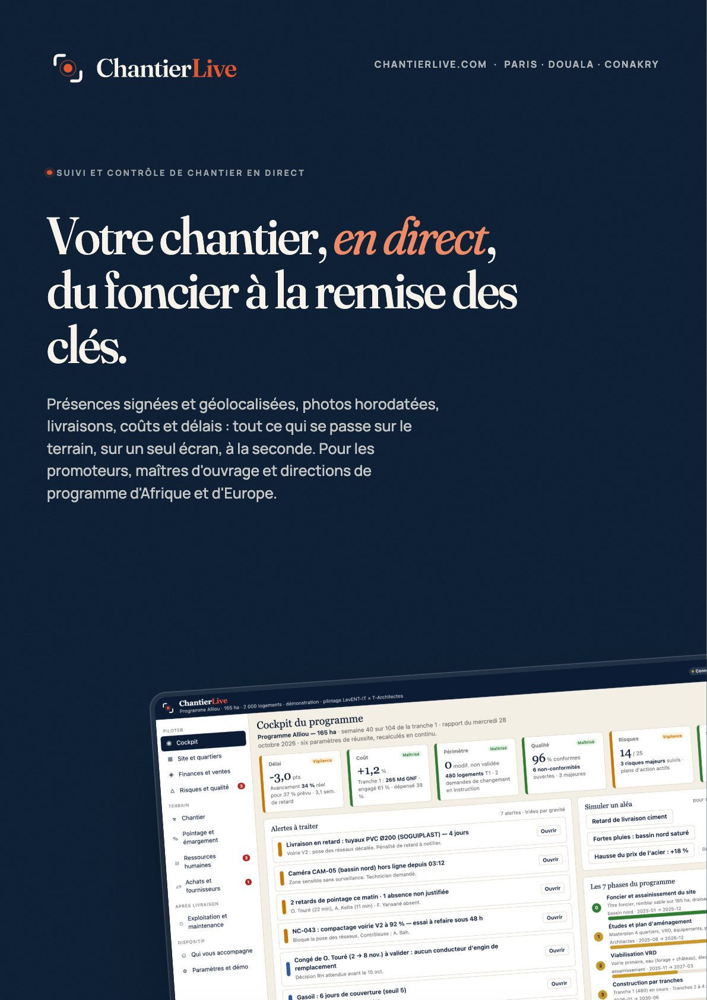
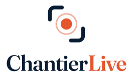

02 · Le logo
 Fond sombre
Fond sombre
Un système, six versions.
Le logo horizontal est la version de référence. La version verticale sert aux formats carrés et aux couvertures ; le symbole seul, aux icônes, favicons et avatars ; les versions monochromes, aux impressions une couleur, aux gravures et aux fonds photo.
Référence · fond clair

Vertical
Vertical · fond sombreMonochrome encre
Monochrome blanc · fond signal ou photo
Symbole
Fond sombre
Monochrome
Icône d'application
Avatar
Zone de protection : la hauteur du halo du point (soit 27 unités pour un symbole de 64), tout autour.
Construction. Le symbole mesure une fois et demie la hauteur des capitales du mot. L'espace entre le symbole et le mot vaut la largeur du point. Le texte est composé en Fraunces 600, optique 72, interlettrage −3 % ; il est vectorisé dans les fichiers SVG, qui s'affichent donc partout sans dépendre des polices installées.
Tailles minimales. Logo horizontal : 24 px à l'écran, 20 mm en impression. Symbole seul : 16 px, 5 mm. En dessous, utiliser le symbole seul ou la pastille.
Sur une photo. Logo inversé sur une zone sombre et calme, monochrome blanc sur une zone colorée, ou pastille. Jamais la version couleur sur une photo claire et chargée.
Favicon et icône d'application. Symbole craie sur carré encre à coins arrondis (16 unités de rayon sur 64), sans halo.